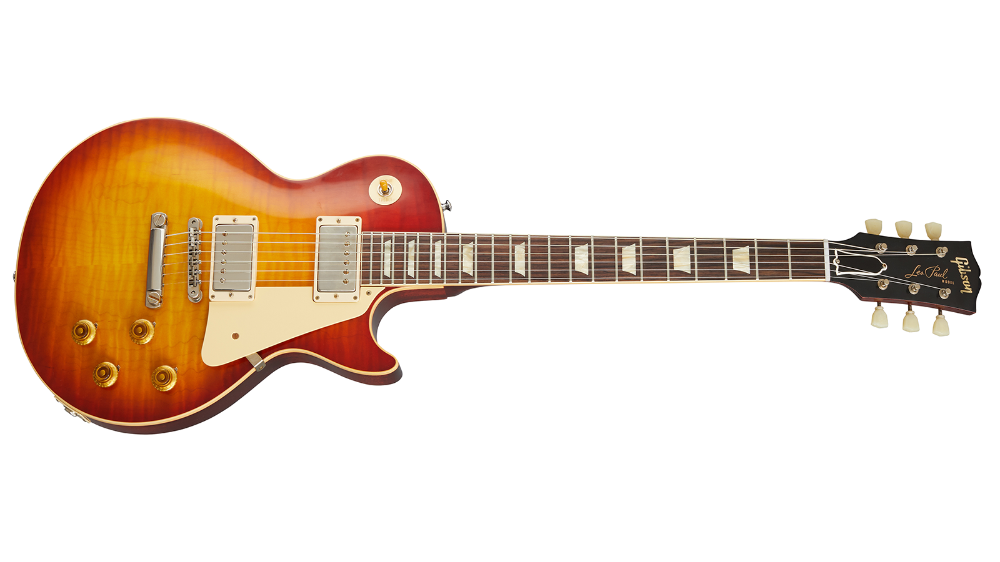

| 画像 | 名称 | 発売年 | メーカー | 愛用しているアーティスト |
|---|---|---|---|---|
| STRATOCASTER | 1954年 | Fender | ジミ・ヘンドリックス
エリック・クラプトン |
|
| TELECASTER | 1951年 | Fender | 布袋寅泰
ジミー・ペイジ |
|
|  | Les Paul | 1952年 | Gibson | 松本孝弘
スラッシュ |
| JAZZMASTER | 1958年 | Fender | 米津玄師
トム・ヴァーレイン |